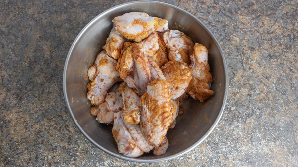
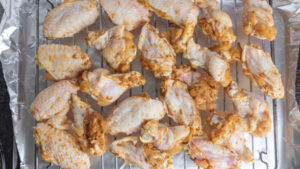
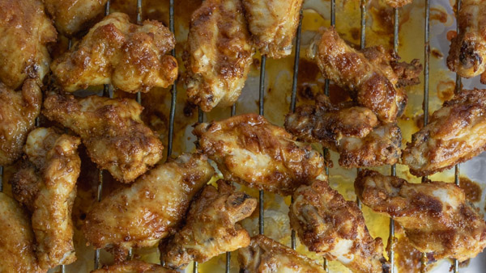
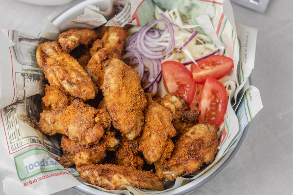

Short Description
Chicken Suya is made with chicken thighs or chicken wings! This popular Nigerian street food recipe is perfect for the summer, entertaining or to just enjoy on a weeknight. The chicken is marinated in Suya spice also known as yaji or Suya pepper and then grilled to perfection with the wings falling off the bones. It is flavourful utterly delicious. Suya spice is a popular marinade used on thinly sliced beef and grilled on open fire until well done. It is mostly made by men called Mallam and served at nights. Over time, the mallam started incorporating other protein such as hen and chicken into the mix. They serve this grilled meat with salad wrapped in old newspapers.
Suya is the word that describes any skewered, grilled meat in most parts of Africa, particularly Nigeria and Cameroon. The term originated with the Hausa people, one of the largest ethnic groups in West Africa. Most suya recipes feature beef. But this chicken version boasts skinless chicken thighs. I think they’re more flavorful than chicken breast, but you can go that route if you want low-fat.
These African-style chicken satays are smothered in a spicy, flavorful peanut butter sauce, then baked to juicy, crispy perfection. They’re ideal for snacks, summer picnics, or even a main dish. Amazingly good!
Ingredients
- 1 kg Chicken wings 2.2lb
- 4 tablespoons suya spice divided
- Salt to taste
- 2 teaspoons chicken bouillon powder
- 3 tablespoons vegetable oil or peanut oil
| Equipment: | Oven |
|---|---|
| Prep Duration: | 10 mins |
| Cook Duration: | 45 mins |
| Total Duration: | 55 mins |
Steps to prepare Nigerian Chicken Suya Recipe
- Prep the chicken wings: Cut it into drumettes and winglets and pat dry with a kitchen towel and transfer to a bowl.
- To the chicken wings, add salt, chicken bouillon powder, 2 tablespoons suya spice and mix into the wings
until well
combined. Cover the bowl with clingfilm and leave to marinate in a cool place for at least 30 minutes.
The
longer you
marinate the chicken, the tastier it becomes, so feel free to marinate for up to 24 hours in the fridge.
 - Whilst the wings is marinating, to a small bowl, add the remaining `suya spice and vegetable oil and mix to combine.
- Preheat the grill or oven at 180C/360F and prepare the baking tray, line it with an aluminium foil and place a baking rack on it.
- Arrange the chicken wings on the baking rack, given them enough room so they cook evenly and gets enough
air
circulation
in the oven.
 - Brush the chicken with the marinade made earlier and grill/broil or bake in the oven for 15 minutes.
Take it
out of the
oven and flip then rub more of the marinade, return into the oven and continue cooking for another 15
minutes. For a
final time, bring it out of the oven, flip and rub the remaining marinade and grill for another 15
minutes.
 - Bring the chicken wings out of the oven and transfer to a bowl, sprinkle more suya spice and serve with sliced onions, tomatoes and any other salad of choice. Enjoy!
What to serve it with
- 1 medium red sliced onion
- 2 medium roma sliced tomatoes
- 2 cups thinly sliced cabbage
- Chopped lettuce 